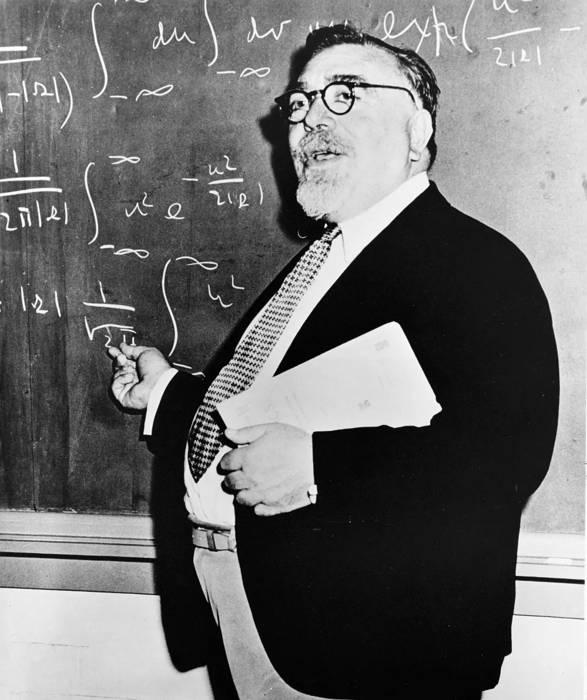
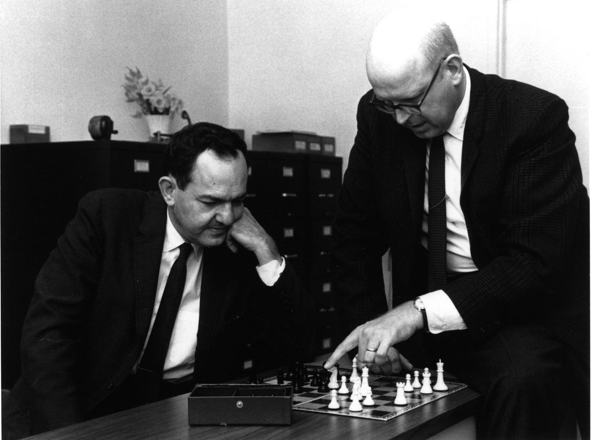

The field of Artificial Intelligence today is dominated by systems that learn from massive amounts of data in a way that mimics the biological structures of the brain—specifically, neural networks. However, this approach is actually a resurgence of ideas that were marginalized for decades. For the majority of the second half of the 20th century, the dominant paradigm in AI research was “Symbolic AI” (often referred to as Good Old-Fashioned AI, or GOFAI). This paradigm completely decoupled intelligence from biology, viewing “thinking” simply as the manipulation of discrete symbols according to formal, programmatic rules, rather than a biological function of a brain.1
The Divergence of Early Artificial Intelligence due to Cold War Politics
This dominance was not an inevitable scientific progression. In the late 1940s and 1950s, two distinct, competing philosophies regarding machine intelligence emerged. On one side was the Cybernetic view, championed by mathematicians like MIT’s Norbert Wiener, which modeled the world through continuous feedback loops, statistics and probability, and biological analogies.2 On the other side was the symbolic and digital view, which sought to abstract the messy physical world into clean, discrete, and manageable symbolic logic.3
In 1950, Alan Turing published his seminal essay “Computing Machinery and Intelligence.” Turing moved the scientific community past the metaphysical question of whether machines possessed a soul or consciousness, and instead proposed a practical, observable test: the “Imitation Game.”4 By asking whether a digital computer could simulate human behavior well enough to deceive an interrogator through typewritten messages, Turing helped establish the philosophical baseline that text-based, symbolic interaction could be the ultimate determinant of intelligence.5
But why did the symbolic approach win the funding and focus of the era?
This was not just an academic debate. Starting with World War II fire-control problems, and subsequently shaped by the “Closed World” political discourse of the Cold War, a specific engineering reality allowed the symbolic approach to prevail.6 The military-industrial complex—specifically through the massive, un-peer-reviewed funding of the Advanced Research Projects Agency (ARPA)—required technology that offered precise Command and Control over a chaotic global battlefield.7 The military needed the certainty and explainability of digital, symbolic logic championed by researchers like Herbert Simon and Allen Newell, favoring it over the messy, probabilistic, and unpredictable nature of early neural networks.8
The military requirement for command and control systems drove the scientific community to favor symbolic AI over cybernetics between 1950 and 1973, despite the theoretical limitations identified by critics like Hubert Dreyfus and James Lighthill.
This combination of scientific theory and military necessity fueled an era of extreme optimism, and set the stage for a devastating collapse. The AI Winter proved that the military’s ideological desire for a controllable closed-world system could not overcome the mathematical reality of the combinatorial explosion in open-ended, real-world environments.
Scroll to continue
What Does it Mean to Think? The Theoretical Foundation of AI
The Turing Test and the Redefinition of Intelligence
Before engineers could build a thinking machine, the scientific community had to define what “thinking” actually was. In 1950, British mathematician Alan Turing published his landmark essay, “Computing Machinery and Intelligence,” in the journal Mind.9 Turing famously opened with the question, “Can machines think?” but replaced it with a more practical, less ambiguous challenge: Can a digital computer win the “Imitation Game”?
In Turing’s game (dubbed the Turing Test), a man, woman, and interrogator communicate exclusively through typewritten messages. The man attempts to convince the interrogator that he is the woman, while the woman tries to prove her true identity. Turing asked: Could a machine replace the man and successfully deceive the interrogator?10 By framing intelligence through this game, Turing shifted the focus from indefinable internal states or subjective consciousness to observable behavior.11 Turing preemptively refuted multiple objections to machine intelligence, including:
- The Theological Objection: The belief that thinking requires an immortal soul granted only to humans by God.
- The “Head in the Sand” Objection: The fear-based hope that machines simply cannot think.
- The Mathematical Objection: The argument that discrete-state machines have inherent limitations, as demonstrated by Godel’s Incompleteness Theorems.12
Turing was optimistic, stating that humans could only “see a short distance ahead, but we can see plenty there that needs to be done.” He predicted that by the year 2000, an average interrogator would have less than a 70% chance of making the correct identification after five minutes of questioning.13 He even speculated on the necessity of “learning machines” that could modify their own programs rather than execute fixed instructions.14
“Brain Modelers” vs. “Mind Modelers”
Turing established that a machine’s output could be considered intelligence, but how should that machine be built? Two distinct camps emerged in the 1950s:

The Cybernetic View
This camp focused on “embodied” minds and continuous feedback loops.16 Mathematician Norbert Wiener coined the term “Cybernetics” to describe the science of communication and control. He noted deep structural resemblances between computers and the human brain.17 Psychiatrist Dr. Warren McCulloch pushed this biological analogy further, arguing that the brain is essentially a computer where neurons are living electrical relays and synapses are switches that pass or block pulses.18

The Symbolic View
Conversely, the opposing camp of researchers separated AI entirely from cognitive psychology, biology, and cybernetics.19 Led by figures like Allen Newell and Herbert Simon, this camp created the Physical Symbol System Hypothesis, which argued that intelligence was simply the manipulation of discrete symbols according to logical rules, regardless of the physical medium.20 The invention of high-level programming languages like FORTRAN and LISP (developed by John McCarthy) accelerated this view. These languages created a layer of abstraction that hid the physical hardware, creating the illusion of a pure, logical machine.21
The 1956 Dartmouth Conference
The theoretical divide was formally addressed in the summer of 1956. John McCarthy, Marvin Minsky, Nathaniel Rochester, and Claude Shannon organized the Dartmouth Summer Research Project on Artificial Intelligence at Dartmouth College in Hanover, New Hampshire.22 This gathering is widely considered the founding event of AI as a formal research discipline, giving the field its name, community, and research agenda.23
The proposal for the conference clearly reflected the Symbolic AI approach:
“The study is to proceed on the basis of the conjecture that every aspect of learning or any other feature of intelligence can in principle be so precisely described that a machine can be made to simulate it.”
— Dartmouth Proposal24
At Dartmouth, researchers focused on the algorithmic, symbolic, and structural models of cognition: reasoning, abstraction, problem-solving, and language.25 Due to the rapidly advancing computing technology and an ambitious post-war scientific climate, the sentiment surrounding the conference was highly optimistic. As one retrospective article noted, the attendees “were convinced they could solve the problem of machine intelligence in a single summer.”26

The Engineering Reality
The Human as a Servo-Mechanism
The philosophical debate between cybernetics and symbolic AI was not born in a vacuum (specifically, not from purely theoretical research); a very real, life-or-death engineering problem during World War II led to the birth of cybernetics—anti-aircraft fire control. The National Defense Research Committee (NDRC) needed to understand how human operators tracked fast-moving enemy planes. In May 1941, MIT electrical engineer Harold Hazen wrote an important memo titled “The human being as a fundamental link in automatic control systems.”27
Hazen proposed treating human operators not as conscious people, but as devices reacting to input signals. He suggested applying the “frequency-response methods of communications engineering” to human behavior, viewing the operator as a servo-mechanism.28 The military embraced this behaviorist approach. Psychological studies of human operators intensified: researchers even subjected machine operators to electric shocks and loud noises simply to test their physical stability under stress.29 Engineer Enoch Ferrell explicitly equated the human role to a negative feedback amplifier, using Nyquist’s mathematical criterion to determine the stability of the human-machine combination.30
Norbert Wiener’s Failure and the Birth of Cybernetics
To automate this anti-aircraft tracking, mathematician Norbert Wiener and engineer Julian Bigelow attempted to build an “anticipator” network that could predict the path of an enemy airplane using continuous voltages (analog computing). However, the apparatus failed. It was hypersensitive to noise and oscillated violently when tracking corners or jerky movements.31
Wiener realized the stability problem was fundamental. He shifted from smooth-curve prediction to a statistical approach based on the autocorrelation of the target’s past performance, attempting to combine power and communication engineering through statistics.32 Yet, despite the theoretical merit of his Root Mean Square (RMS) error minimization, the system still failed in practice. It required a long history of data to predict a path, but real combat tracking only lasted a few seconds. As scientist and mathematician Warren Weaver (notably, a pioneer of machine translation) noted, minimizing RMS error meant the system cared little about “near misses,” but in anti-aircraft fire, a miss of 10 yards was as useless as a miss of a mile.33
Alienated by the military’s “secret and chummy” culture and the failure of his military contracts in 1943, Wiener retreated to the civilian world.34 He reframed his military fire-control problems into a biological and physiological philosophy of feedback, coining the term Cybernetics.35 Notably, Wiener framed this as a brand new scientific discipline, citing historical figures like Leibniz and Maxwell, while failing to cite his actual engineering predecessors in feedback control like Elmer Sperry or Harold Hazen.36
George Stibitz and the Triumph of the Digital
While Wiener struggled with the messy, continuous, oscillating world of analog feedback, the NDRC was internally debating how to model the world inside a machine.37 Division 7 of the NDRC initially resisted electronic digital computing, trusting the Newtonian physical reliability of mechanical cams and gears over fragile vacuum tubes.38 They even rejected funding for the famous ENIAC project, viewing such projects as “basic but very long range research” that wouldn’t help the immediate war effort.39
However, George Stibitz at Bell Labs found a solution. Building computers based on standard telephone relays, Stibitz clarified the distinction between continuous analog signals and discrete pulses, officially suggesting the term “digital” to replace “pulse” in a 1942 memo.40 Stibitz defined his relay machines as topological, not metric. This meant the function was determined entirely by the wiring connections (the topology), rather than the physical, mechanical precision of the parts (the metric).41
Stibitz introduced the “Tape Dynamic Tester” (1942), which replaced precision-machined mechanical cams with punched paper tape, allowing the military to cheaply duplicate flight profiles for testing gun directors.42 Unlike the ENIAC, which had to be physically re-wired with cables for different tasks, Stibitz’s Model II used “code” on a tape to program operations.43
THE DIVERGENCE
Stibitz’s digital relays succeeded because they leveraged the existing, reliable industrial manufacturing of Western Electric.44 More importantly, Stibitz’s digital representation achieved something new: it decoupled the structure of the computer from the calculation it was performing.45 Inside the machine, information became abstract, represented by switch closures rather than physical motion.46
By the end of the war, Division 7 had poured over $500,000 into Stibitz’s relay computers.47 The military had made its choice. They favored the clean, discrete, and highly reliable abstract logic of the digital/symbolic approach over the unpredictable, oscillating, and biologically-inspired cybernetic approach. This reality paved the way for the dominance of Symbolic AI in the ensuing Cold War.
The “Closed World” of ARPA
and the Military-Industrial Complex
The Politics of Containment and Formal Representation
The victory of Symbolic AI cannot be solely attributed to a scientific consensus. Rather, it was a direct consequence of Cold War political ideology. Historian Paul N. Edwards coined the term “Closed World” discourse to describe the Cold War strategy of containment. In this worldview, the globe was perceived as a chaotic system that had to be fiercely managed and controlled via technology.48
To control this chaotic world, the military required a “language of formal representation.”49 AI and cognitive psychology provided exactly this: a way to reduce the unpredictable physical world into manageable, logical symbols that a machine (and by extension, the military) could process.50 Edwards argues that the “closed world” of the AI laboratory, which is simulated and rule-bound, mirrored the military’s desire for a closed world of global politics.51 The ultimate subject of this closed world was the cyborg, an integration of human and machine designed specifically to eliminate human error and emotion from military decision-making.52
ARPA and IPTO
The military required sophisticated “decision support” systems to manage the complex, high-speed data of the Cold War. For example, this could include distinguishing incoming Soviet missiles from radar decoys.53 To achieve this, the Advanced Research Projects Agency (ARPA) and its Information Processing Techniques Office (IPTO) became the primary financial patrons of AI.54
Early AI research faced a severe hardware bottleneck, where batch processing (running one program and its data as a “batch,” one at a time) prevented the interactive experimentation researchers needed.55 To solve this, John McCarthy invented time-sharing, allowing multiple users to access a CPU simultaneously. This created a “subjective environment,” where humans could converse with machines.56
J.C.R. Licklider, the first director of IPTO, heavily promoted this as “Man-Computer Symbiosis,” a coupling of human brains (for goals/heuristics) and computers (for speed/data).57 This vision appealed massively to the military because it directly addressed the command and control problem—a commander could now use a computer to direct a battle in real-time.58 ARPA poured massive, long-term funding with little peer review into what became known as “centers of excellence” (including MIT, Stanford, CMU), effectively locking these labs into supporting the Department of Defense.59 While the military wanted command and control systems (like the Semi-Automated Ground Environment, or SAGE, the first air defense system in the US) to automate the electronic battlefield, AI researchers piggybacked on these military goals, using the funding to build “thinking machines” under the guise of complex information processing.60
The Logic Theorist and GPS
PRESENT STATE
A
GOAL STATE
B
Funded by this military-industrial complex, Symbolic AI flourished. A primary example of this was Allen Newell and Herbert A. Simon’s Logic Theory Machine (LT) and the General Problem Solver (GPS) (both funded by the Air Force—military funding for AI was not solely from ARPA). Introduced at the Dartmouth Conference, the Logic Theorist was the first computer program to simulate human-like problem-solving. It was designed as a “Complex Information Processing System” (IPS) to discover proofs for theorems in symbolic logic.61 To combat the mathematical complexity of generating every possible proof, LT utilized heuristic methods rather than systematic algorithms.62
Simon expanded on this with the General Problem Solver (GPS). GPS was designed to reason in terms of “means and ends” regardless of the subject matter.63 It functioned by detecting differences between a “present situation” and a “goal,” then searching its memory for tools to reduce those differences.64 Because algorithms (systematic, guaranteed solutions) were too computationally expensive, GPS relied on heuristics—rules of thumb or selective explorations—to abstract problems, remove real-world details, solve the simplified version, and use that as a guide.65
This can be seen as the ultimate realization of the Cold War command-and-control AI dream: a top-down, logically sound, rule-obeying system. Yet, it only functioned as long as the world it operated in remained closed and tightly defined.
The Hype Machine and Selling
the “Second Industrial Revolution”
“Mechanical Eve”
Click to read the TIME articleThe public’s introduction to AI elicited both awe and anxiety. In 1950, Time magazine published a cover story on the state of computing, framing machines as the dawn of a new era. The magazine described the Harvard Mark I (nicknamed “Bessie”), describing the 760,000-part machine as a “mechanical Eve” that proved the viability of large-scale autonomous computing.66 To illustrate the speed gap, Time noted that a 290-page book of mathematical tables, which would take a human years to calculate, took the Mark I just twelve days.67
The article highlighted the tension between conservative experts like Professor Howard Aiken (the original designer behind the Mark I), who viewed machines simply as tools lacking imagination, and radicals like Norbert Wiener.68 Wiener predicted a “second industrial revolution” where artificial brains would devalue the human mind just as the first industrial revolution devalued the human arm.69 Experts predicted these electronic brains could soon solve the flow equation of the US economy across 38 industries to predict depression, act as mechanical stenographers to instantly translate speech, and run entirely automatic factories.70
Engineers even began anthropomorphizing the hardware. They observed an IBM computer that “hated to wake up” in the morning without a warmup, and Claude Shannon recounted a dial exchange suffering a “nervous breakdown” from overwork during WWII.71 Wiener went as far as to suggest that complex machines could suffer “psychoses” (unruly memories) that were curable by rest, an electric shock (increasing voltage), or a lobotomy (disconnecting parts).72
The Perceptron
Click to read the New York Times articleAs the decade progressed, specific engineering achievements were spun into sci-fi prophecies. On July 7, 1958, The New York Times reported on the U.S. Navy’s unveiling of the “Perceptron,” designed by Cornell psychologist Dr. Frank Rosenblatt.73
The actual demonstration was remarkably narrow. Researchers used the Weather Bureau’s $2,000,000 “704” computer to simulate a neural network. After fifty trials of making no distinction, the machine underwent a “self-induced change in the wiring diagram” and successfully learned to register a “Q” for squares on the left and an “O” for squares on the right.74
However, the promises broadcast to the public were astronomical. The Navy claimed that this was the embryo of the first non-living mechanism capable of recognizing its surroundings without human control.75 Dr. Rosenblatt claimed that the final $100,000 physical machine would contain 1,000 electronic “association cells,” and predicted that Perceptrons would eventually walk, talk, instantly translate languages, reproduce themselves on an assembly line, and “be conscious of its own existence.”76 He even suggested they would be “fired to the planets” as mechanical space explorers.77
CBS Brings the “Thinking Machine” into the Living Room
CBS · Tomorrow · 1961
By 1961, AI hype reached the living rooms of millions of Americans via the CBS television documentary The Thinking Machine, hosted by David Wayne.78 MIT Professor Jerome Wiesner opened the broadcast by declaring the digital computer might be of “greater importance than the atomic bomb,” and predicted that within five years, scientists would universally agree that machines do, in fact, think.79
The American public was shown demonstrations of early AI successes in closed-system environments:
- Game Playing: Dr. Arthur Samuel of IBM demonstrated a computer playing checkers, which learned from experience by storing successful move combinations on tape.80
- Logic Puzzles: Nobel laureate Herbert Simon showcased a computer printing out step-by-step solutions to the “Cannibals and Missionaries” logic puzzle, arguing that complex logic is just a “cascade” of simple steps.81
- Creative Writing: To prove machines could be creative, MIT’s Doug Ross programmed the TX-0 computer to write an original TV Western script called “Saga.” Ross included variables like an inebriation factor for the robber; as the variable increased, the robber’s behavior in the script became increasingly erratic.82
The Economic Promises of Automation
The researchers themselves fueled this public perception. Herbert Simon predicted in his book The Shape of Automation that the “second revolution” in management science would see computers automating nonprogrammed (judgement-based) executive decisions within 10 to 20 years.83 However, Simon attempted to quell public fears of sudden unemployment. He argued that replacing the labor force would take several generations due to capital constraints, and that by Gresham’s Law of Planning (routine drives out non-programmed activity), automation would actually remove boring work and free up human capacity for creativity and innovation.84
The Reality Check and
the First AI Winter
The Triple Revolution
While AI researchers and the media were fueling hype for AI and its transformation of the future, the reality of society in the 60s was drastically different. In 1964, a group of scientists submitted a memorandum to President Johnson out of a “feeling of foreboding” regarding the nation’s economic and social future.85 This memorandum, known as The Triple Revolution, warned that the government’s newly announced War on Poverty would fall short because it failed to grasp the magnitude of technological change.86 Failing to adopt radically new economic strategies would result in unprecedented economic and social disorder in the US.87
The authors argued that the world was simultaneously undergoing three mutually reinforcing revolutions: the Cybernation Revolution, the Weaponry Revolution, and the Human Rights Revolution.88 The Cybernation Revolution was the combination of the computer and the automated, self-regulating machine, which was creating a system of almost unlimited productive capacity that required progressively less human labor, and this transition was happening far faster than the agricultural and industrial revolutions.89
Thus, the population living in poverty was growing despite the technological potential to supply the needs of everyone.90 The committee argued that conventional economic analysis failed to address this issue because it incorrectly assumed the economy would naturally create enough new jobs to absorb displaced workers.91 The cause of this massive unemployment was that the productive capability of machines was rising more rapidly than the capacity of human beings to keep pace.92 The authors proposed a radically new economic strategy: the government must legally guarantee an adequate income to every individual and family as a human right, viewing it as the only way to distribute and consume the massive abundance produced by automated machines.93
Theoretical Critiques

Variables: 0
Critics of Symbolic AI warned of, for years, its internal flaws, which finally caught up to the engineering reality. Philosopher Hubert Dreyfus released his critique Alchemy and Artificial Intelligence in 1965, challenging the assumption that all intelligence activities could be formulated in a program.94 He argued symbolic AI suffered from a “first step fallacy”: the mistaken belief that success in simple, rule-bound domains like checkers or chess would naturally scale to the complex, open-ended real world.95 Dreyfus asserted that human intelligence relies on “fringe consciousness” and “ambiguity tolerance”: the ability for humans to zero in on relevant information without explicitly checking every possibility. This is something digital computers and their discrete logic fundamentally could not do.96 Later, John Searle’s “Chinese Room” thought experiment would further challenge this, demonstrating that a computer program manipulating purely formal symbols has only syntax (rules) but no semantics (genuine understanding), which makes strong, human-emulating AI impossible via formal programs.97
The Lighthill Report and the First AI Winter

The bubble finally burst in 1973. Commissioned by the British Science Research Council to evaluate the state of the field, Sir James Lighthill released a highly critical report that helped dismantle the optimism of AI.98 Lighthill’s report identified the combinatorial explosion problem: as variables in real-world environments increased, the computational power required to process them with symbolic logic grew exponentially, making general-purpose AI completely intractable for the computing power of the era.99
Lighthill separated AI research into three categories:
- Category A: Advanced Automation (which had valid, distinct scientific goals).
- Category C: Computer-based CNS (Central Nervous System) studies (which also had valid neurobiology/psychology merit).
- Category B: The “Bridge” of general-purpose robots/systems (which Lighthill declared a profound failure).100
Lighthill advised funding to be pulled from Category B, effectively dismantling the British funding rationale for general AI research.101 Combined with the disillusionment from a decade of unmet promises, this initiated what is now historically known as the first AI Winter.
Conclusion and Legacy:
Are We Repeating History?
The Legacy of GOFAI
The historical trajectory of AI was not an inevitable result of scientific discoveries. For decades, the field was dominated by Symbolic AI (GOFAI), an approach that abstracted the world into discrete, manageable logic.102 This victory was largely dictated by the “closed world” political discourse of the Cold War. The U.S. military-industrial complex, facilitated by ARPA’s massive funding of “centers of excellence” (like MIT, CMU, and Stanford), required precise “command and control” systems to manage the global threat of communism.103
They favored the reliable and rule-bound logic championed by researchers like Herbert Simon and Allen Newell, marginalizing the messy, probabilistic, ground-up Cybernetic approach pioneered by researchers like Norbert Wiener and Frank Rosenblatt.104 However, the AI Winter proved that the military’s ideological desire for a perfectly controllable, closed-world system could not overcome the mathematical reality of the combinatorial explosion in open-ended, real-world environments.105
The Resurgence of the Bottom-Up Brain
Today, the paradigm has flipped. The modern AI renaissance, driven by Large Language Models (LLMs) and deep learning, is fundamentally a resurrection of the cybernetic, neural network approach that was sidelined during the Cold War. Instead of programming a computer with top-down, explicit logical rules (like Simon’s General Problem Solver), modern AI mimics the biological structure of the brain, utilizing massive data sets and statistical probabilities to “learn,” which is exactly the bottom-up approach the Navy demonstrated with Rosenblatt’s Perceptron in 1958.106
Unresolved Philosophical Questions
Yet, despite our progress from vacuum tubes and telephone relays to massive GPU clusters, the foundational philosophical critiques of the 1960s and 70s remain unresolved.
- The Problem of “Know-How”: Philosopher Hubert Dreyfus warned that digital computers fundamentally lack “fringe consciousness,” “ambiguity tolerance,” and the non-formal “know-how” that comes from lived, biological experience.107 Are modern LLMs, which are built entirely on the statistical relationships of formal text, truly acquiring “know-how,” or are they intrinsically limited by their lack of a lived context?
- Syntax vs. Semantics: John Searle’s 1980 “Chinese Room” thought experiment argued that a formal program manipulating symbols can never possess semantics (genuine understanding), only syntax (rules).108 Searle concluded that intentionality is a biological phenomenon.109 Do modern neural networks actually understand the words they generate, or are they simply a complex, trillion-parameter version of Searle locked in a room, perfectly matching patterns without any comprehension?
It remains an open question whether the current resurgence of AI is actually solving these fundamental problems of context and embodiment, or if we are just using exponentially more powerful hardware to mask the same limitations identified by Dreyfus, Searle, and Lighthill decades ago.
The New Hype Machine and the Military-Industrial Complex
We can further examine the sociological patterns of the 1950s and 60s. Are they repeating? Just as the 1961 CBS documentary and The New York Times promised machines that would be conscious of their own existence within years, today’s tech industry constantly promises the imminent arrival of Artificial General Intelligence (AGI).110 Furthermore, military and government funding is once again pouring into AI for autonomous warfare, surveillance, and global strategy; perhaps this is a modern version of the Cold War’s “closed world” discourse.
As we live through this new era of AI, we can look to history for a warning: we must carefully distinguish between the simulation of thought and the duplication of thought, and recognize when our engineering realities are being clouded by the hype of our own political and economic ambitions.